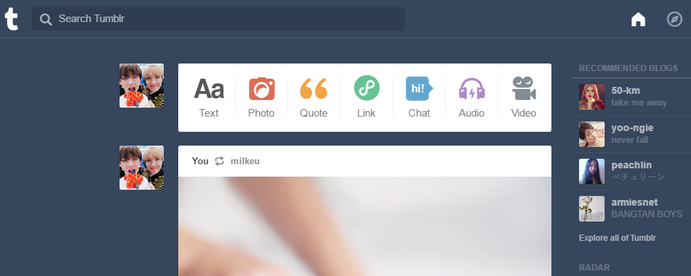

posts
user interface: tumblr
17.01.11
One of the most frequently used sites that I go on is tumblr. It has a straight forward layout that includes a feed of posts, a navigation bar on the top right corner, search bar on the top left, and recommendations to the right side of the posts. Visually speaking, the graphics of the user interface is very simple in terms of design and color. The site is fully blue with hints of color for the various options to post. The visual design is simple enough to understand what each icon does and the dropdown boxes for the navigation gives a clear sense of what the icons include. The appeal of the user interface is that it has easy access to posting original content by the users from the icons to create either a Text, Photo, Quote, Link, Chat, Audio or Video post. There is also a pencil icon on the top right that leads to the same things. On each post throughout the feed, there r also buttons to reblog, like, or send the post for other users to see. It is effective in a way that allows the user to see what content they want in an infinite scrolling.